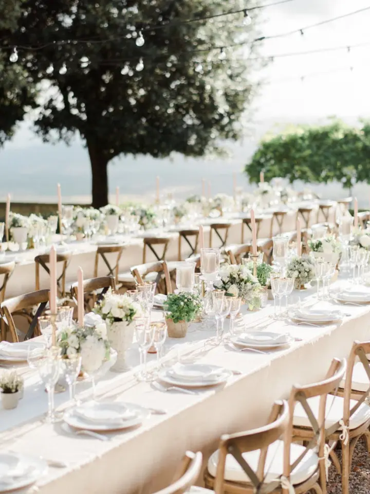

Photo by Ether & Smith on Wedding Wire
There are is one way to do the Tuscany destination wedding theme: minimalism and organics. The more greens the merrier, but leave everything else simple with a neutral palette. Olive leaves are a favorite for obvious reasons, but any botanic will do.
To keep with the countryside feel, round out your décor with romantic, rustic accents to capture the dreamy bucolic essence of Tuscany. And, of course, the reception has to be al fresco. Just don’t forget the bistro lights.
Taken from Hillary Hoffower's 2018 blog post on Wedding Wire